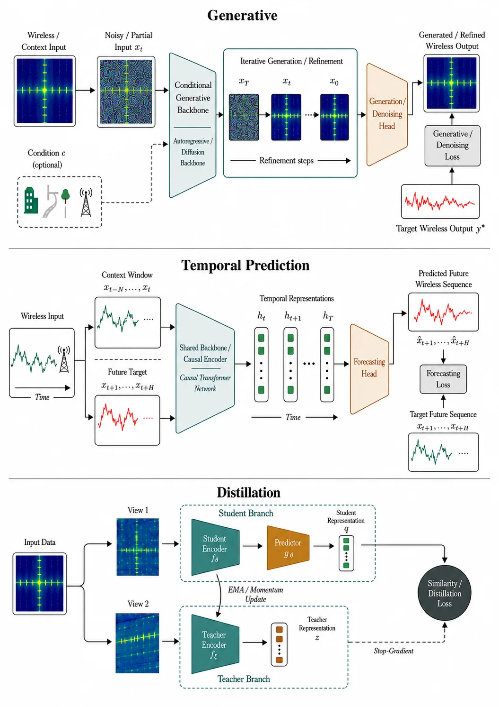
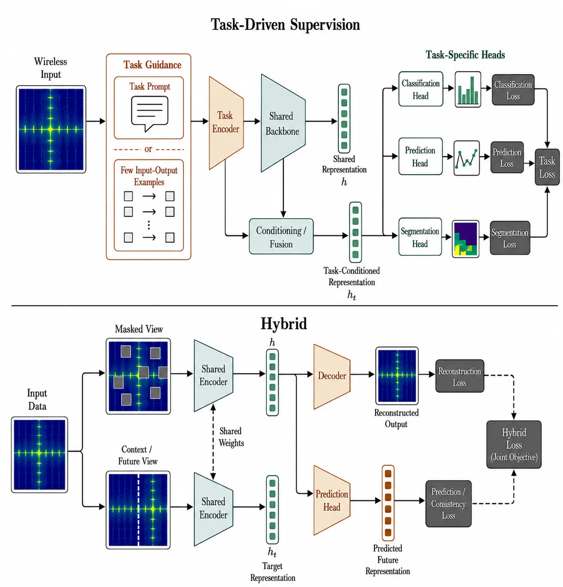
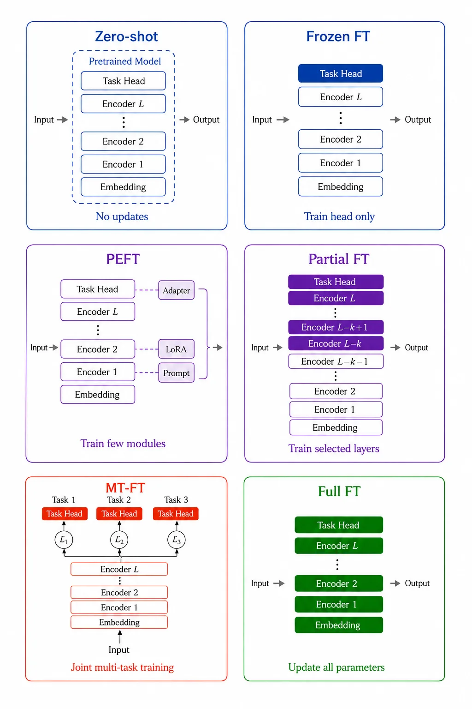

Wireless Foundation Models：现状与开放问题Wireless Foundation Models: State-of-the-Art and Open Challenges
A 级可靠状态估计桥接方向，适合借鉴其 OOD 与跨任务评估框架。
一句话工作总结
它为“基础模型能否迁移到分布变化下的感知与定位”提供了系统分类。
半海报（待补全）
当前记录尚未达到完整海报质量门槛，暂不把摘要或评分理由冒充方法/实验结论。
待补字段：研究上下文.authors（至少 1 条实质条目）。下一次任务需从论文全文或官方 HTML 提取证据后再发布。
摘要
这篇 survey 按信号识别与解调、信道表征、RF sensing/localization、beam management 和 spectrum sensing 五类 PHY 任务梳理 wireless foundation models。重点比较预训练、backbone、适配方式以及 ID、partial-shift 和 OOD 评估。
Wireless foundation models (WFMs) have emerged as a promising approach for learning reusable representations from large-scale wireless data and adapting them to downstream tasks. However, the rapidly growing literature remains fragmented across modalities, pretraining objectives, architectures, adaptation strategies, and evaluation protocols, making it difficult to assess progress toward broadly transferable models. This survey provides a systematic analysis of WFMs for physical-layer applications. We first introduce the main WFM design components, including pretraining, backbone architectures, and downstream adaptation. We then organize the literature into five physical-layer task families: signal recognition and demodulation, channel representation learning, RF sensing and localization, beam management, and spectrum sensing and monitoring, while separately examining multi-task PHY models. Across these categories, we analyze how existing models are pretrained, adapted, and evaluated, with particular attention to downstream task diversity and the distinction between in-distribution, partial-shift, and out-of-distribution transfer. Our analysis shows that current WFMs provide increasing evidence of reusable wireless representations, but this evidence varies considerably across task families and evaluation settings. Differences in datasets, modalities, architectures, pretraining objectives, adaptation protocols, and distribution shifts make it difficult to determine which design choices drive transfer and generalization. We conclude by identifying open directions for improving data availability, evaluation rigor, generalization, efficient adaptation, and real-world deployment, providing a unified framework for understanding the current WFM landscape and the requirements for developing more reusable foundation models for future physical-layer wireless systems.
图表/页面预览

{kind=link}

{kind=link}

{kind=link}
